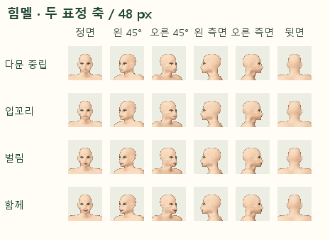
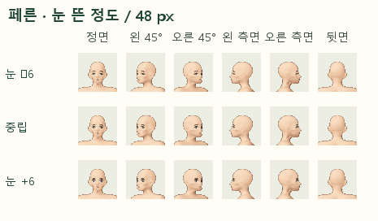
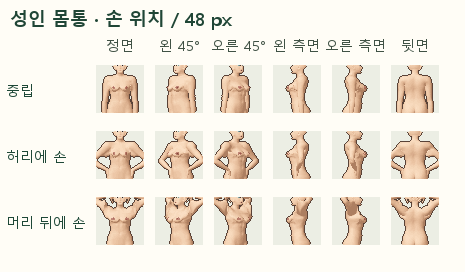

직접 조작
49차는 47차의 중립 연구 형상에서 출발합니다. 왼쪽에는 48차 후보가 열리며 47차 중립이나 37차로 바꿀 수 있습니다. 같은 동작을 양쪽에 적용할지 선택하고, 조작값과 시점을 함께 저장할 수 있습니다.
실제 표시 크기



원화와 달랐던 부분
힘멜은 입꼬리 올림과 벌림을 분리했다. 입을 벌린 설정화 2에서 세 표식 평균 거리가 1.139→0.590픽셀로 줄었지만, 치아·입선의 가시 두께 변화는 원화의 열린 간격보다 컸다. 같은 벌림을 처음 대조한 14화의 다문 측면에 적용하면 원화에 없는 간격이 생겼다. 페른은 원본의 틈이 비슷해도 촬영각 정합 방법에 따라 48차 눈꺼풀 수정의 우열이 바뀌었다.


같은 사람의 몸통에서 확인한 범위
원저 그림 5에서 같은 참여자가 서서 손을 허리에 둔 사진과 머리 뒤에 둔 사진을 대조했다. 흰 표식과 판독 가능한 하부 경계만 표시했다. 표식 위치를 바꿔 반복하자 밑면 변화의 방향도 불확실했다. 두 자세는 작업대에서 재현하고 몸통 자체의 기본형은 40차를 유지한다.